Guilloche Dutch Lighthouse Radiate 20260821
Stage-4 Dutch guilloche review: the sol-5.6 reference-guided two-layer lighthouse radiate as a 3x5 plate - row 1 red/green reference, row 2 seeded randoma11y color-pair explorations, row 3 wild glitch/extreme treatments - across stroke widths 0.25, 0.5, 1, 2, and 4. Prior round: generation-guilloche-20260816-index.
Izzi generation commit: 79d156c0be0441fd216a6e8989054a07e5ad1324 · 16 passes
-
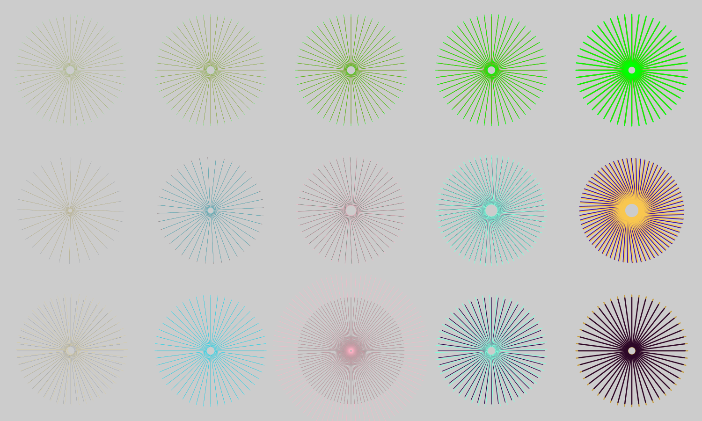
3x5 review plate grid
The full 2400x1440 Dutch lighthouse radiate review plate: rows reference, exploration, and wild treatments across stroke widths 0.25, 0.5, 1, 2, and 4.
-
Row 1 Col 1 - red/green reference
red/green reference at 0.25 point stroke on the 20% gray review background.
-
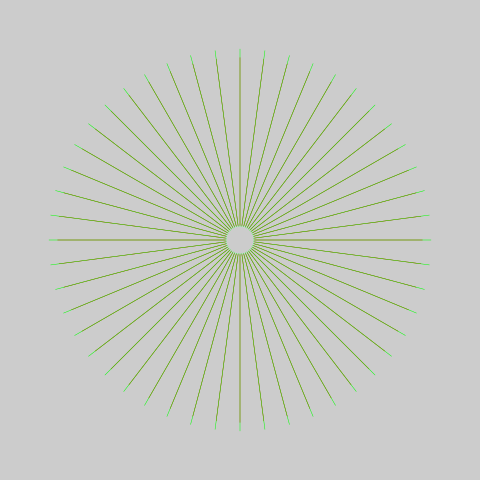
Row 1 Col 2 - red/green reference
red/green reference at 0.5 point stroke on the 20% gray review background.
-
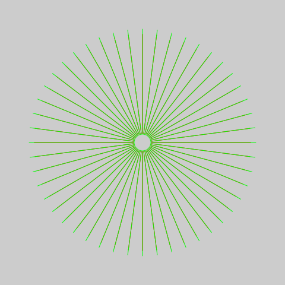
Row 1 Col 3 - red/green reference
red/green reference at 1 point stroke on the 20% gray review background.
-
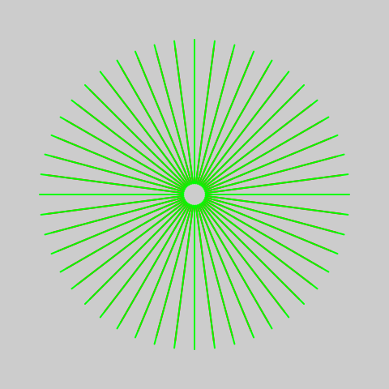
Row 1 Col 4 - red/green reference
red/green reference at 2 point stroke on the 20% gray review background.
-
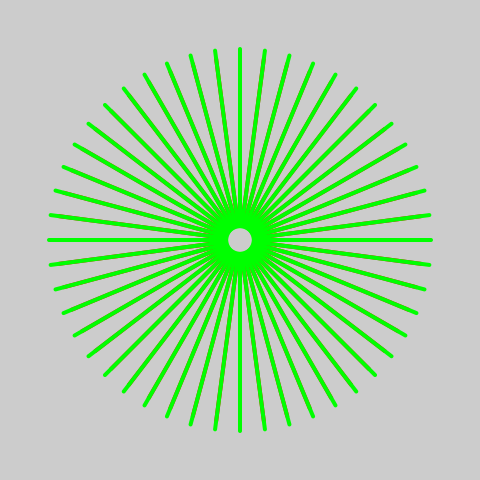
Row 1 Col 5 - red/green reference
red/green reference at 4 point stroke on the 20% gray review background.
-
Row 2 Col 1 - midnight gold color-pair exploration
midnight gold color-pair exploration at 0.25 point stroke on the 20% gray review background.
-
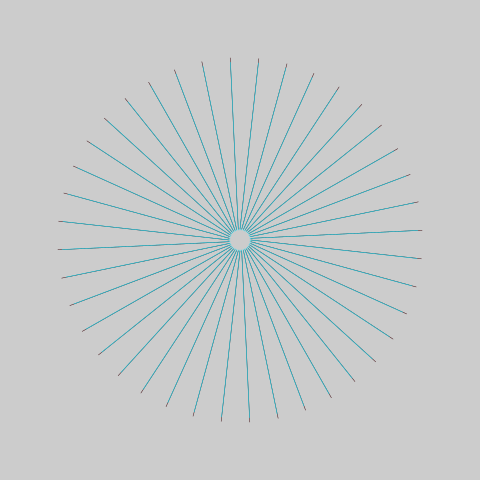
Row 2 Col 2 - oxblood cyan color-pair exploration
oxblood cyan color-pair exploration at 0.5 point stroke on the 20% gray review background.
-
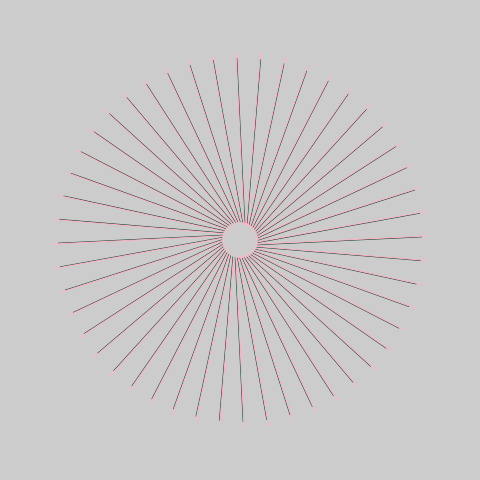
Row 2 Col 3 - forest blush color-pair exploration
forest blush color-pair exploration at 1 point stroke on the 20% gray review background.
-
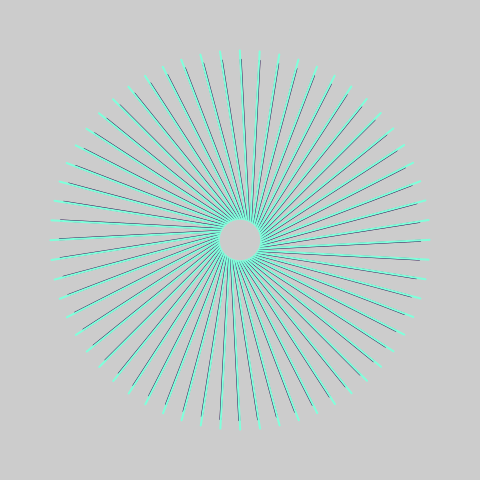
Row 2 Col 4 - aubergine mint color-pair exploration
aubergine mint color-pair exploration at 2 point stroke on the 20% gray review background.
-
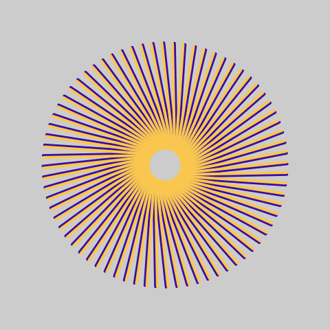
Row 2 Col 5 - indigo sun color-pair exploration
indigo sun color-pair exploration at 4 point stroke on the 20% gray review background.
-
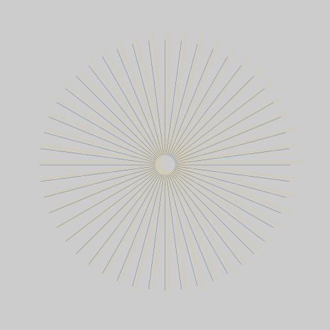
Row 3 Col 1 - registration glitch wild treatment
registration glitch wild treatment at 0.25 point stroke on the 20% gray review background.
-
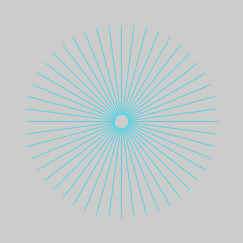
Row 3 Col 2 - asymmetric widths wild treatment
asymmetric widths wild treatment at 0.5 point stroke on the 20% gray review background.
-
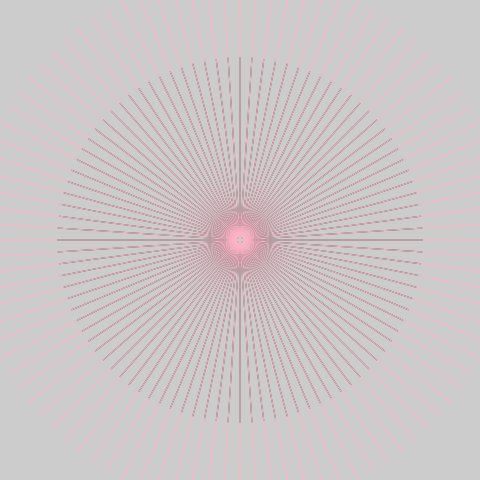
Row 3 Col 3 - extreme parameters wild treatment
extreme parameters wild treatment at 1 point stroke on the 20% gray review background.
-
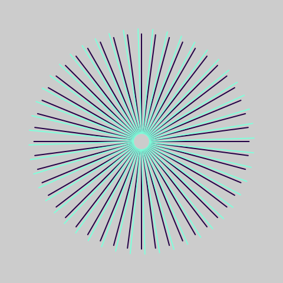
Row 3 Col 4 - layer rotation wild treatment
layer rotation wild treatment at 2 point stroke on the 20% gray review background.
-
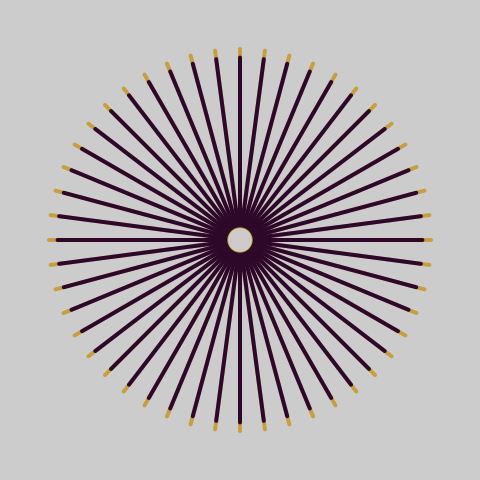
Row 3 Col 5 - multiply surprise wild treatment
multiply surprise wild treatment at 4 point stroke on the 20% gray review background.